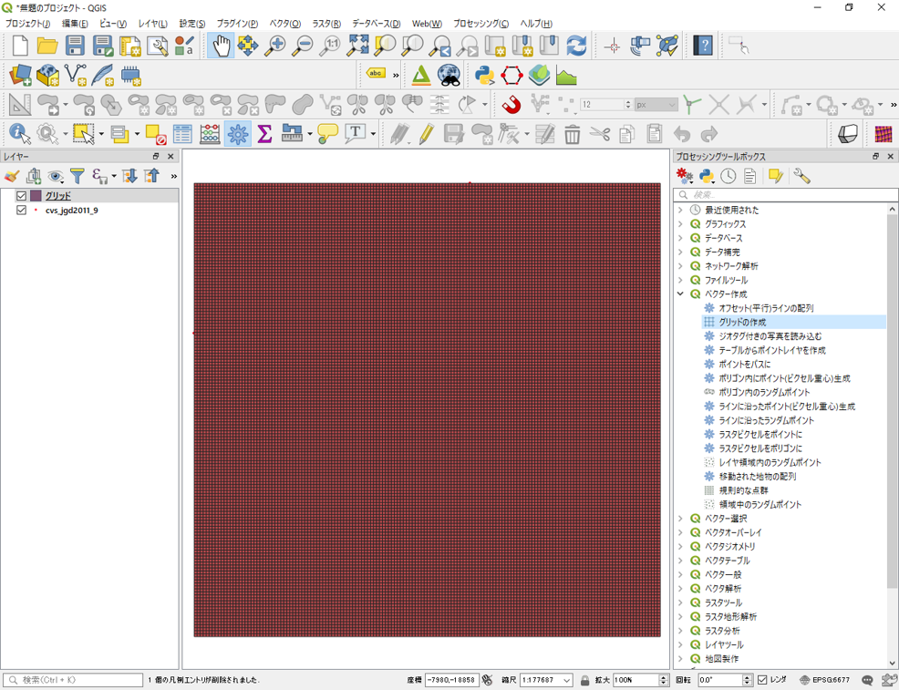
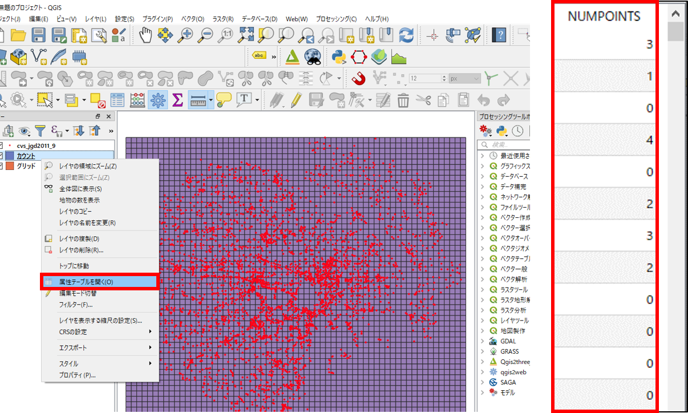
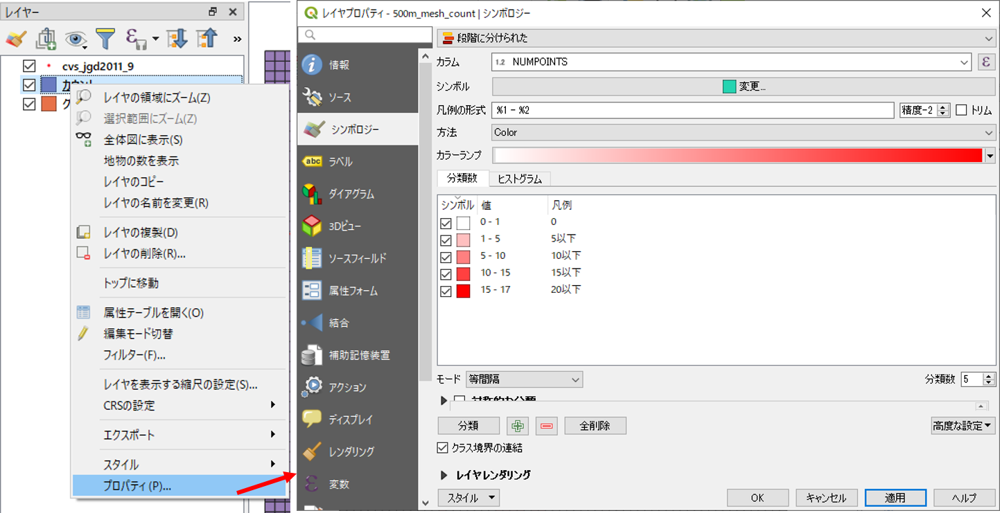
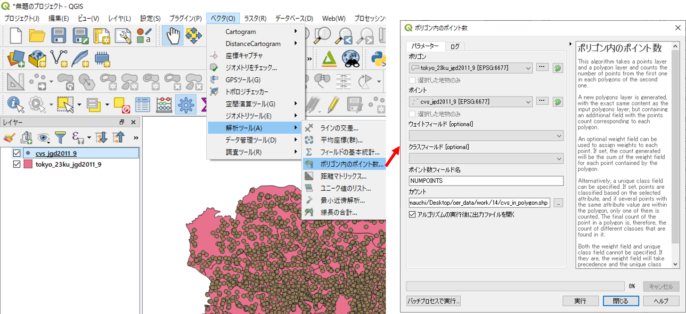
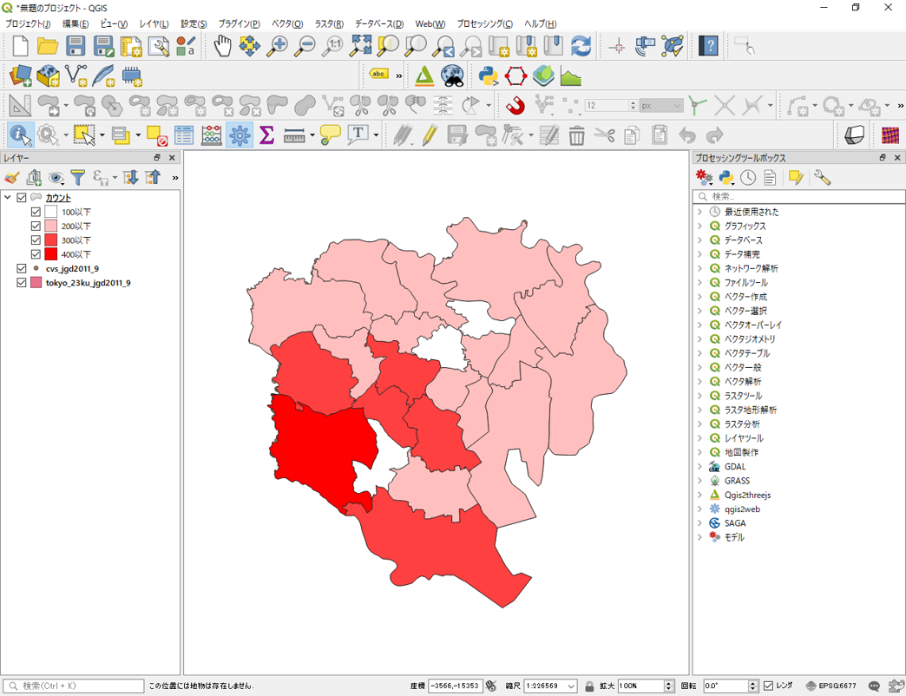
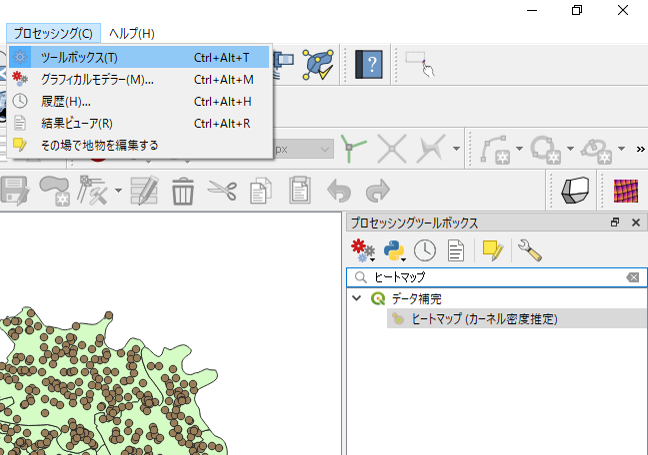
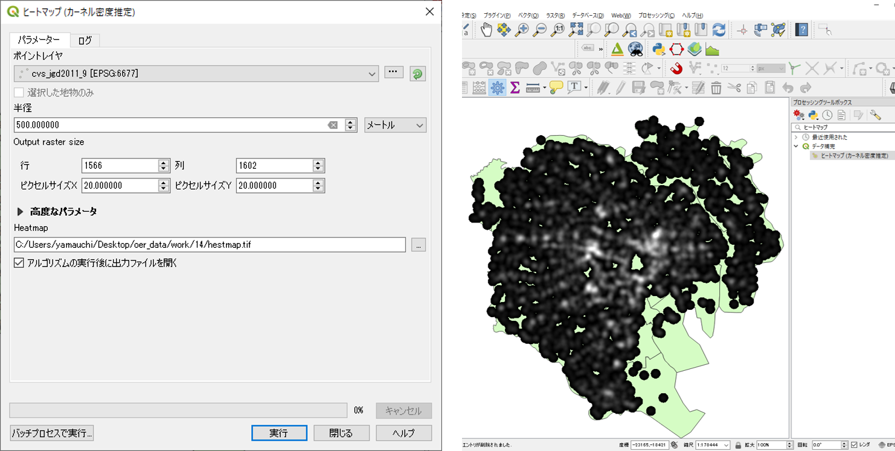
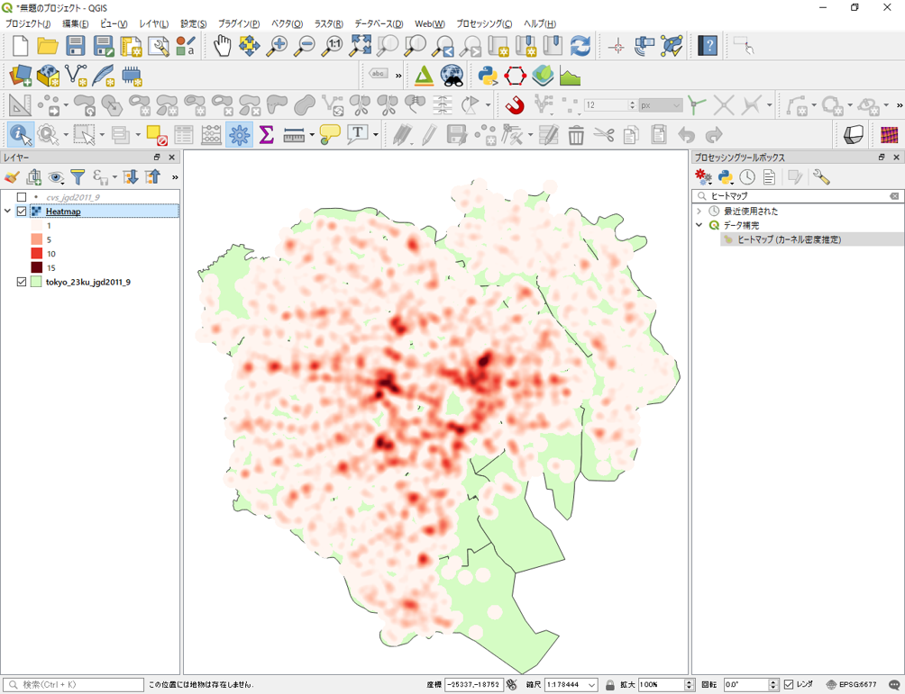

点データの分析
本教材は、「点データの分析」の実習用教材です。QGISを用いて、点データの密度を可視化し視覚的に分析する手法や、点パターン分布を数理的に分析する手法について解説しています。
Menu
視覚的分析
以下は解説を省略したため、関心のある方は、GIS実習オープン教材を参照してください。
実習用データ
実習をはじめる前に、tokyoをダウンロードしてください。
視覚的分析
以下では、国土数値情報のコンビニエンスストアのデータを用いて、QGISでポイントデータの密度を視覚的に分析する手法について解説しています。前提として、点データの視覚的分析では、メッシュや行政区画などの空間集計に用いるオブジェクトの大きさに影響されることを注意する必要があります。
点の分布密度
下の図は、QGISでcvs_jgd2011_9.shpファイルを読み込み、東京都のコンビニエンスストアの分布を示したものです。この図を見ると点が密集している地域とそうでない地域があることはわかります。しかし、地域ごとの密度の違いはよくわかりません。そこで、以下ではQGISでメッシュ（方形区）や行政区画ごとに密度を可視化する手法を解説します。

メッシュによる点密度の表示
プロセッシング＞ツールボックス＞ベクター作成＞グリッドの作成から以下の手順で、メッシュを作成する。ここでは、500m×500mのメッシュを作成する。

- 長方形（ポリゴン）を選択する。
- レイヤの領域を使うため、cvs_jgd2011_9を選択する。
- 水平、垂直方向をそれぞれ500mとする。
- 出力先とファイル名を指定する。
- 実行をクリックする。
下の図のように、500m×500mのメッシュが作成できる。 
メッシュ内のポイント数を計算する
ベクタ＞解析ツール＞ポリゴン内のポイント数からメッシュ内のポイント数を以下のように計算する。

- ポリゴンに出力したメッシュを選択する。
- ポイントにコンビニのレイヤ(cvs_jgd2011_9.shp)を指定する。
- 出力先を指定する。
- 実行をクリックする。
以下のように、メッシュ内のポイント数を集計した、新規ポリゴンが作成される。  属性テーブルを開き、一番端の列のデータを並び替えて表示すると、計算結果が追加されていることが確認できる。
メッシュ内のポイント数で色分け
プロパティ＞シンボロジーから メッシュ内のポイント数をもとに色分けを行う。

※属性値が、文字型になっていると、ポリゴン内のポイント数の段階づけの色分けができない。そのため、以下の手順で数値型へ変換する。メッシュの属性テーブルを開き、フィールド計算機>新しいフィールドを作るから、フィールド名（任意）を入力し、出力フィールドタイプをintegerにする。次に、フィールドと値からポイントを集計した列名を選択し、OKをクリックする。再計算が完了したのを確認し、編集モード（鉛筆マーク）をクリックし編集結果を保存する。
以下のように、メッシュごとにコンビニの密度が可視化される。

行政区内の点密度
以下では、行政区画のポリゴンを利用し、行政区ごとの点密度を計算する手法について解説しています。tokyo23ku_jgd2011_9.shpを読み込み、解析ツール＞ポリゴン内のポイント数から、以下ののように設定し、行政区ごとのコンビニ数を計算する。

計算結果のスタイルをプロパティから設定する。
プロパティ＞シンボロジーから属性値に応じて、以下のようにポリゴンの表現を整える。

カーネル密度推計
カーネル密度分析は犯罪発生マップなどに用いられる手法で、カーネル関数を用いてポイントの分布密度を連続的な密度局面としてモデル化する手法です。QGISでは、プロセッシング＞ツールボックス＞データ補間＞ヒートマップ（カーネル密度推定）を選択し、以下のように実行します。


- 入力ポイントレイヤにコンビニのデータを選択する。
- 半径を500mとする。
- ピクセルサイズをそれぞれ、20とする。 ※ピクセルサイズが、小さすぎると処理時間が長くなるため十分に注意する。
- 出力ラスタを設定し、実行をクリックする。
出力されたラスタの配色を、プロパティ＞シンボロジーから設定する。

半径の値（バンド幅）を変えて出力し、同じ閾値で分類すると結果が変わることも確認しておくと良い。バンド幅を広くとったカーネルは広域的傾向把握に有効である。一方で、局地的な値への対応が難しくなる。そのため、バンド幅の設定には注意する必要がある。

この教材の課題ページ_点データの分析へ進む
ライセンスに関する注意事項
本教材で利用しているキャプチャ画像の出典やクレジットについては、その他のライセンスについてよりご確認ください。